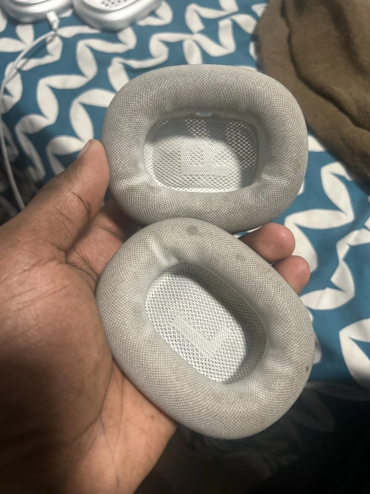
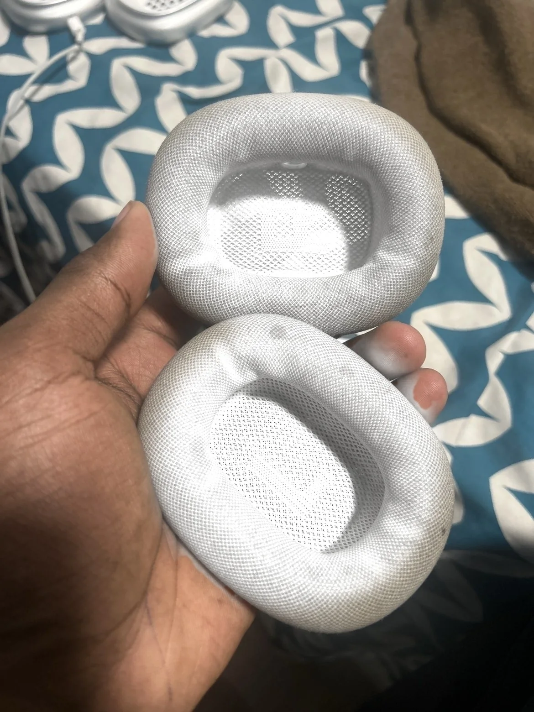

Vos coussinets,
remis à neuf.


29 $ la paire · retour en 48 h · compatible AirPods Max et casques à coussinets en maille.
Les laver chez soi, c'est risquer la mousse et le tissu. Les remplacer, c'est près de 90 $. Nous les remettons à neuf, maille, mousse et odeur, pour 29 $.

La remise à neuf, en trois étapes
-

Dépose
Les coussinets tiennent par aimants. Ils se retirent sans outil et sans laisser de trace sur le casque.
-

Traitement en profondeur
La maille est nettoyée fibre par fibre, la mousse traitée et désodorisée sans la détremper, pour retrouver son blanc et son maintien.
-

Séchage, remise en forme, contrôle
Séchage à l'air, remise en forme de la mousse, contrôle sous lumière rasante, puis remise en place. Vous récupérez un casque comme neuf.
Le même casque, avant et après.
Glissez le curseur. À gauche, les coussinets tels qu'ils nous arrivent. À droite, ce que nous rendons.


Les rendus « après » de l'ouverture et du comparateur sont simulés à partir de la photo « avant » ; la photo réelle les remplacera.
Ce qu'il faut savoir
- Tarif par paire
- 29 $taxes en sus · bandeau du casque : +15 $
- Délai
- 48 hà partir de la réception
- Remise du casque
- Dépôt ou envoicueillette Gatineau–Ottawa : +10 $
- Région
- Gatineau · Ottawaenvoi postal partout au Canada
Réserver une remise à neuf
Dites-nous quel casque vous avez. Nous revenons vers vous dans la journée avec la marche à suivre.
Demande prête.
Votre courriel s'est ouvert avec la demande. Si ce n'est pas le cas, écrivez-nous à bonjour@freshpads.ca.